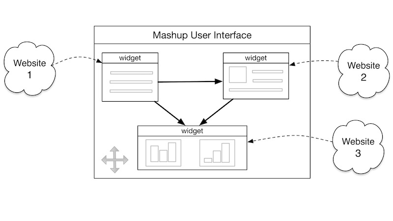
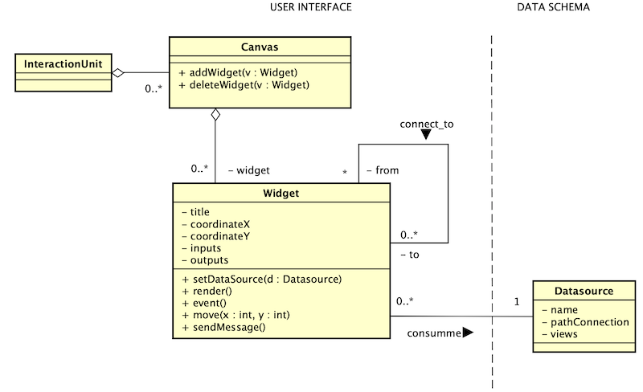
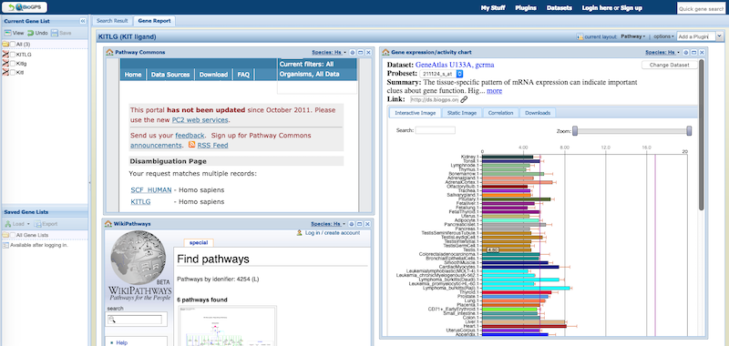
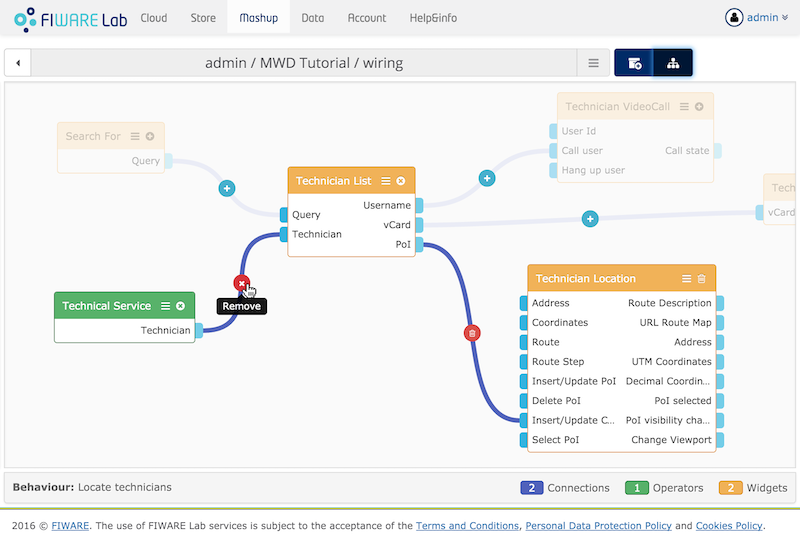

Mashup interface

Problema:
Contexto:
Los usuarios utilizan dashboards para mostrar, en una sola vista, los datos de diferentes fuentes a través de componentes gráficos interactivos que soportan varios formatos (video, texto, imágenes). A pesar de que las diversas fuentes proveen servicios o APIs que permiten intercambiar información entre aplicaciones, la integración de las fuentes de datos y la sincronización de sus contenidos en la interfaz es compleja.
Fuerzas:
Solución:
Proporciona una interfaz basada en la tecnología Mashup. Un Mashup permite crear una aplicación Web nueva a partir de la mezcla o reutilización de otras web. El contenido de otros sitios web se muestran a través de widgets (componentes visuales estáticos o interactivos) construidos por desarrolladores utilizando tecnologías web (HTML, CSS, JavaScript). En una interfaz mashup, el usuario dispone de espacio de trabajo o lienzo de análisis de datos sobre el cual tiene libertad de:
Configurar espacio de análisis.- Permitir al usuario agregar widgets al lienzo de análisis a partir de un catálogo de widgets prexistentes. Por cada widget, el usuario puede configurar la fuente de datos (API o servicio), los detalles de presentación (posición, titulo, tamaño), las entradas (los mensajes que recibe el widget) y las salidas (los datos derivados producidos por un mensaje de entrada).
Organizar visualización.- Permitir al usuario colocar y organizar libremente los widgets sobre el lienzo, de acuerdo a sus necesidades de visualización.
Orquestar comportamiento.- Permitir al usuario definir explícitamente la relación entre los widgets, conectando las salidas de un widget con las entradas de otros widgets. De esta manera, un widget recibe una interacción (p. Ej. Filtrar) del usuario, el widget puede enviar mensajes a todos los widgets conectados obligándolos a recuperar datos y actualizar su contenido de acuerdo a la interacción del usuario.
Este patrón permite a los usuarios explorar los datos de manera visual, intuitiva. Combinando este patrón con el patrón Historial de Comandos (Tidwell, 2012, pág. 275), el usuario puede revisar el historial de condiciones añadidas a los datos como resultado de la interacción con los gráficos y puede deshacer las condiciones realizadas.
Los widgets soportan los formatos de contenido (imágenes, texto, video, sonido) provisto por la fuente de datos. La orquestación de widgets interactivos se convierte en una alternativa para integrar fuentes de datos dispersos y de formato heterogéneo (estructurado, semi estructurado y no estructurado).
Dependiendo de la velocidad del consumo de datos (es decir, en tiempo real o en modo de proceso por lotes), los widgets pueden visualizar desde gráficas 2D simples a cuadros de monitoreo complejos en tiempo real que permiten configurar alertas para que reaccionen ante eventos. Al contrario que el procesamiento por lotes, el procesamiento de datos en tiempo real imponen un alto rendimiento en la representación de la visualización, lo que implica la necesidad de un software de representación en la nube o una arquitectura independiente que admita la visualización de datos acelerada por hardware (GPU).
Estructura:

Patrones relacionados:
Asociación: Dashboard
Agregación: ninguno
Especialización: ninguno
Ejemplos:
La Fig. 1 presenta la interfaz de usuario de BioGPS [1], un portal basado en tecnología mashup para anotación de genes. La aplicación dispone de una extensa librería de plugins (widgets) que recuperan y muestran información de literatura biomédica, genes, pathways, datos de expresión, proteínas, genética obtenida de diferentes fuentes como son PubMed, Ensembl, KEGG, reactome, OMIM, MyGene.info [6]. Entre los plugins más populares están por ejemplo Gene Wiki, Gene Expresión Chart, WikiPathways, Reactome, KEGG (human).

Fig. 1 Interfaz de Usuario de BioGPS [1] conteniendo 3 plugins que recuperan información acerca del gen KITLG desde diversas fuentes. El primer plugin recupera recuperar información del sitio Pathway Commons [2] (izquierda superior), el segundo plugin recupera información de WikiPathways [3], una wiki especializada en rutas metabólicas (izquierda inferior), y el tercer plugin denominado Gene Expression Chart, recupera y muestra a través de un gráfico de barras las referencia a las fuentes de datos de expresión (p. Ej., Gene Atlas) del gen consultado (derecha).
La Fig. 2 presenta la interfaz de usuario de Wirecloud
[5] que permite al usuario orquestar los widgets definiendo el comportamiento entre ellos a través de conexiones entre las entradas y salidas de los widgets. A pesar de que el ejemplo no está alineado con la biología, éste permite entender la lógica de la conexión entre widgets. El nodo “Technician List” representa a un widget que lista los técnicos empleados en un trabajo. El nodo "Technician Location” representa un widget que presenta la localización del técnico a través de un mapa. El “Technical Service” es un componente de Wirecloud que representa a una fuente de datos; en este caso, el servicio que provee la lista de técnicos. Cada nodo incluye puertos de entrada y salida de datos ubicados en los lados siendo los puertos en la izquierda para las entradas y los de la derecha para los de salida. El usuario puede conectar la salida de un nodo con la entrada de otro nodo para establecer la conexión entre ellos.

Fig 2. Interfaz de usuario de WireCloud para , Fuente: [4]
Bibliografía